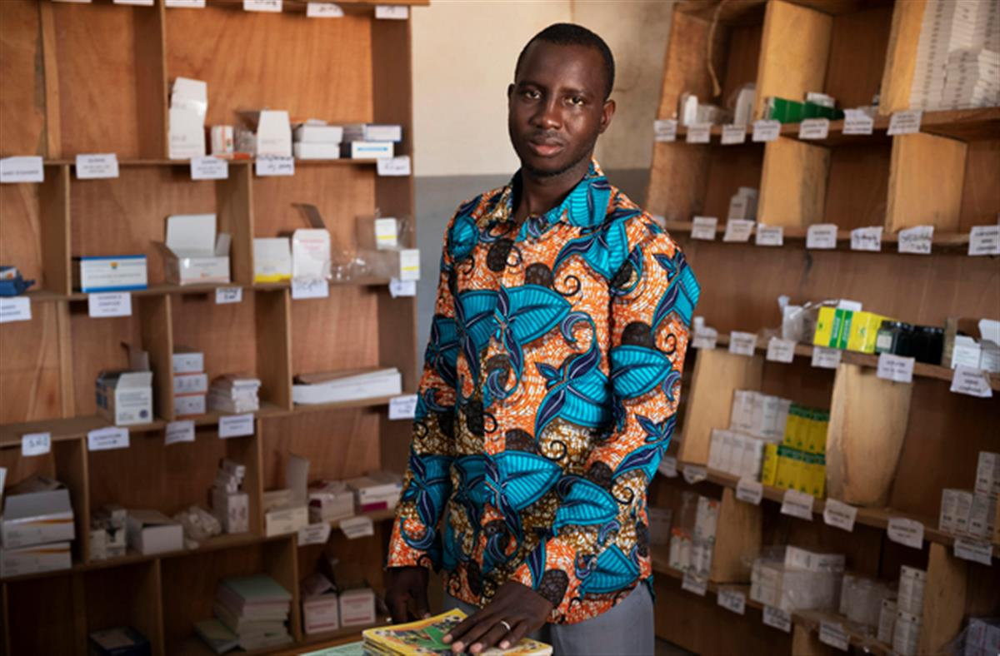
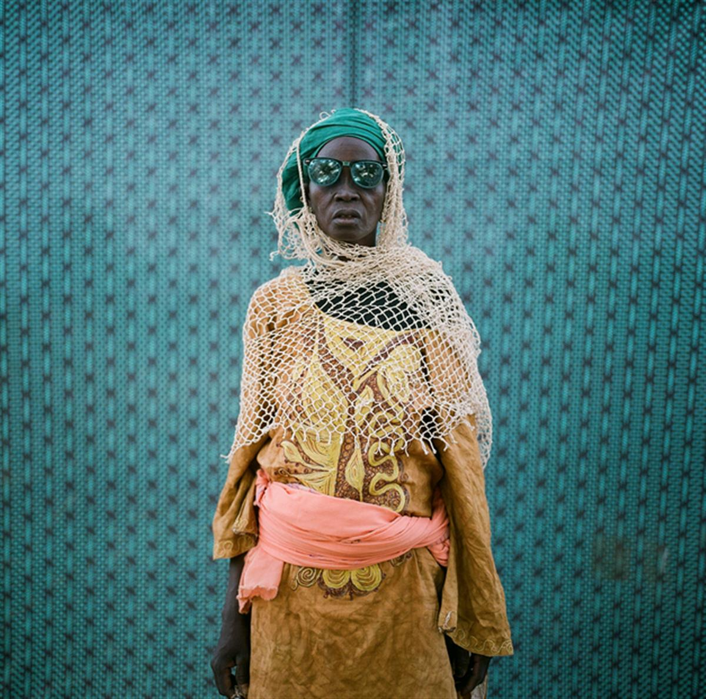
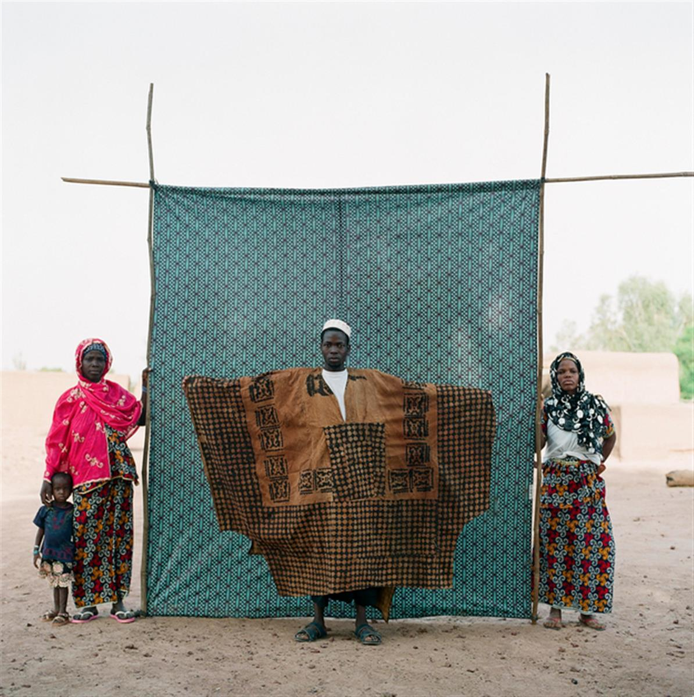
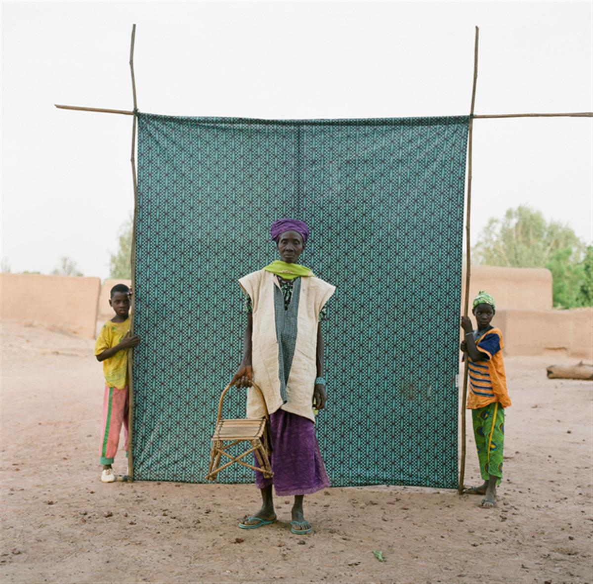
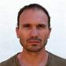

WaterAid/Guilhem Alandry
Posted by Guilhem AlandrY on 14 February 2019
Photographer Guilhem Alandry travelled with WaterAid to Mali, to capture the performances of a hygiene behaviour-change drama group and daily life in a rural healthcare centre. Here, he shares with us his approach to photography and talks about the opportunity it can have in engaging people across the world with international development projects.
How long have you been a photographer?
I guess this is a difficult question to answer. When do you actually become a photographer? Is it when you pick up your first camera? Is it when you get your first commission or publication? I started taking pictures more than 20 years ago and I have been making a living from photography for the last 15.
How do you work when photographing people?
90% of the time I have an interaction with my subject before photographing them and in that process, I ensure that the person or people photographed consent to it. I show them the images at the back of the camera and try my best to explain why I’ve taken them. As for the rest it very much depends on the project and the context.
What’s it like, photographing in a health centre?
Where do I start? It can be quiet and nothing happens, or it can be so busy that you don’t know where to point your camera. You really have to be considerate when photographing people who are unwell or who are giving birth. You have to respect their privacy and also take into consideration the local customs. That is a fine line.
It can be quite full-on, and you can’t be squeamish, but it can also be very emotional. On this trip I was present during a delivery and witnessing the birth of a child is always a special moment. That was one of the highlights, for sure.
I have been working as photographer for the past 15 years and have travelled extensively in Africa. So I have photographed in many health centres in the past. I would say this was no different from many of the other places I’ve visited. The staff were amazing though; they are modern-time heroes doing an essential job with limited resources – including no clean running water on the premises.

WaterAid/Guilhem Alandry
Madani, 35, the pharmacist at Talo Health Centre, Mali. Because there's no clean water, he can't wash his hands between dealing with patients, including when taking blood.
Was there anything unexpected that happened? Did anything shock you, or change your mind?
One morning when I arrived, a woman was clearly in labour, so I asked the matron Salimata to let me know when she was had given birth so I could photograph the baby. When she called me, the woman had delivered a boy and I focused my attention on the newborn baby. I could tell that the woman was still in pain behind me and she was still contracting. I thought she was delivering the placenta so left her alone. Then when I turned around she had delivered a twin boy. I took a beautiful photograph. Later in the trip I visited the woman at home to see her babies and they were very happy. As I left Mali a few days later I found out that one of the twins had died. That was very sad.
It wasn’t the first time I was present at the birth of a child – and that includes the birth of both my children! In this case I was working so I got on with it, but I couldn’t help feeling a bit emotional when it was all over. I was shocked to witness the placentas being discarded in the latrines at the back of the centre. That didn’t sit well with me. But then again it's just the way it is, they don’t have any other choice.
What has it taught you about what a health centre without water, decent toilets or good hygiene is like?
The situation was really difficult for both staff and patients. It was incredible to see how hard the staff work to keep the patients safe, and to see how the stresses of the water situation adds to the patients’ problems. We are incredibly lucky in our part of the world to not have to worry about water and hygiene when we go to a hospital or a clinic.
Good hygiene is really important to the life and health of babies. It’s something we take for granted, but it provides many challenges to people in the rest of the world. Visiting this clinic really brought these things to the front of my mind. But a lot is being done in that field both in terms of infrastructure and sensitisation and that is good to see.
How did you approach the hygiene performers project?
This project was a commission, and Neil Wissink who is in charge of photography at WaterAid was very receptive to the idea of doing something different for it. So when he mentioned there would be an element of the shoot involving performers, I immediately wanted to do something participatory. And portraits seemed an obvious choice. I am very grateful to Neil for giving me the freedom to approach this commission in a different way – it doesn’t happen that often.

WaterAid/Guilhem Alandry
Saran Kolon, an actor from the Troupe Djonkala of Bla, poses before taking part in a play by the Troupe organised by WaterAid highlighting the importance of hygiene and sanitation.
On the ground we had limited time and resources. We bought the cloth, which was stitched by a local tailor; we found the sticks in the village and made a frame with the help of some villagers. Then I invited the performers as well as some of the Kɔrɔdugaw to pose while we asked various villagers to hold the backdrop. (Kɔrɔdugaw are traditional Malian clown-like performers, who play an important role at ritualistic ceremonies and events. A person becomes a Kɔrɔdugaw by birth or adoption).
Did the people in the photos participate in the photography?
Yes people participated and I let them pose the way they wanted. I had the idea for this shoot, bought the fabric, commissioned the background. Then I set it up, stepped back and invited the villagers and performers to hold it and pose in front of it. I never dictated who should hold the backdrop though, that was chosen by the villagers themselves who would pick spectators in the crowd.
How did you decide the set-up (background, style of photo, pose etc.)? Can you explain the process for this shoot?
At the beginning of this commission I visited Malick Sidibé’s studio in Bamako (a famous Malian photographer) and it had a profound effect on me. His work clearly influenced me in this project, I think it is quite obvious in the photos. The rest happened organically and with what we had at our disposal.

WaterAid/Guilhem Alandry
Moussa Dembele, an actor from the Troupe Djonkala of Bla, poses for a portrait before acting in a hygiene-promotion play by the Troupe, organised by WaterAid in Mali.
What ethical standards do you set when photographing people?
My core principles are freedom, humility, respect, trust, integrity and compassion.
What’s the role of photography for charities? What are the possibilities?
Photography is an essential part of modern communication and that is particularly true to charities. Without it I can’t see how charities can fundraise or how they can inform and advocate.
It's a powerful tool and the possibilities are endless. We need to break away from the mould and do interesting and challenging work. It is about producing images that are emotionally engaging and intellectually stimulating. We should challenge the clichés; especially in the development sector. It is about making people feel, think and act. I think one of the biggest challenges is to get young people to engage with the charity sector and photography has a big part to play in that.
On another note it is also important to have local photographers involved. I was lucky to train some of the WaterAid Voices From the Field photographers/film-makers and it is great to see the work they are doing now.
What message would you like these photos to give?
For me the images of the performers are a celebration of Malian culture. I really feel that one should celebrate the immense variety of customs, cultures and traditions that are found across the African continent. So this is a contribution to that. But also, it is a chance to publicise and showcase the work WaterAid is doing, and that's really important. All my images on show are available as limited edition prints (as well as posters) and on sale for the whole duration of the exhibition. All the profits will go to WaterAid, so please share!

WaterAid/ Guilhem Alandry
Djeliga Coulibaly, an actor from the Troupe Djonkala of Bla, poses for a portrait before acting in a play promoting good hygiene, organised by WaterAid.
As for Talo I hope for a successful campaign. Working as a photographer and film director for charities I’m sometimes told how well a campaign has done and how much money has been raised. Knowing that I have been an important part of this is very gratifying. It's sometimes hard to quantify the importance and value of a photograph, a series of photograph or a publication. A campaign on the other hand is very black and white. It is successful or it isn’t.
Guilhem is on Instagram as @guilhemalandry

Posted by
Guilhem Alandry, photographer
SOURCE: WATER AID